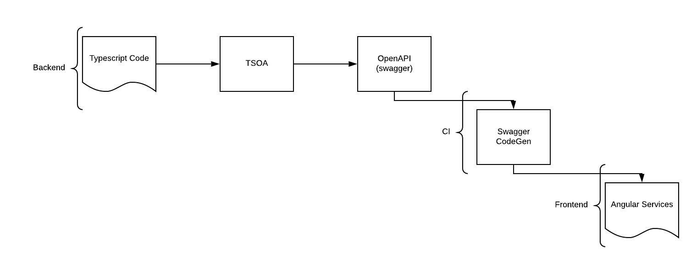

David FAIN
Software Engineer @ WeMaintain
The past
(summarized)
REST issues
- Ambiguity of endpoints
- Duplication of code
- Duplication of types
- Painful to iterate
The old way
Still some issues...
- Ambiguity of endpoints
- Duplication of code
- Duplication of types
- Painful to iterate
The present
(is glorious)
GraphQL to the rescue
Solves all our problems, doesn't it ?

3. Duplication of code
TypeGraphQL
https://typegraphql.ml/
@ObjectType()
@Entity()
class Recipe {
@Field()
@Column()
title: string;
@Field(type => [Rate])
ratings: Rate[];
@Field({ nullable: true })
@Column()
averageRating?: number;
}
type Recipe {
title: String!
ratings: [Rate!]!
averageRating: Int
}
CREATE TABLE Recipe
title varchar(255),
averageRating int
The Goals
- Have a single source of truth when coding
- Reduce boilerplating/code duplication
- Have a typesafe way of doing everything
Permissions
The problem
@Query()
@Authorized("USER")
public async recipes(
@Ctx() context: MyContext,
@Args filters: RecipeFilters
) {
await recipePermissions.canQueryRecipes(context.user, filters)
const recipes = await recipeService.getRecipes(filters)
await recipePermissions.canSeeRecipes(context.user, recipes)
return recipes
}
Our solution
@Query()
@Permission(() => CanQueryRecipes)
@Authorized("USER")
public async recipes(
@Args filters: RecipeFilters
) {
return recipeService.getRecipes(filters)
}
Our solution
export class CanSeeRecipe implements Permission {
public async resolve(
@Ctx() context: Context,
@Root() recipe: Partial
) {
// Do some logic business Logic for the given
// User & recipe
}
}
Our solution
@Entity()
@Permission(() => CanSeeRecipe)
class Recipe {
@Field()
title: string;
@Field(type => [Rate])
ratings: Rate[];
@Field({ nullable: true })
@Permission(() => Or(IsOwnerOfRecipe, HasCommentedOnRecipe))
averageRating?: number;
}
pagination
The problem
ALL THE BOILERPLATE
Boilerplate land
input ConnectionArgs {
before: String
after: String
first: Int
last: Int
}
type PageInfo {
hasNextPage: Boolean!
hasPreviousPage: Boolean!
startCursor: String
endCursor: String
}
type RecipesConnection {
pageInfo: PageInfo!
edges: [RecipeEdge!]!
}
type RecipeEdge {
node: Recipe!
}
type User {
recipes(pagination: ConnectionArgs): RecipesConnection
}
Connecting two entities together
user.entity.ts
@Entity()
@ObjectType()
class User {
@RelayedConnection(() => Recipe)
@OneToMany(() => Recipe, recipe => recipe.user)
recipes: Recipe[]
}
Usage with custom business logic
user.resolver.ts
@Resolver(() => User)
class UserResolver {
@RelayedFieldResolver(() => Recipe)
public async recipes(
@RelayLimitOffset() { limit, offset }: RelayLimitOffsetArgs,
@Arg() filters: RecipeFilters
) {
// Could be any business logic we want
const where = computeWhereFromFilters(filters)
return User.findAndCount({ skip: offset, take: limit, where })
}
}
GRPC
What's GRPC ?

Current gRPC implementation
- Duplication of code
- Need to maintain a .proto file
message GetCommentForRecipeRequest {
int32 recipeId = 1;
}
message GetCommentsForRecipeRequest {
int32 commentId = 1;
string text = 2;
int32 userId = 3;
}
service Recipe {
rpc GetCommentForRecipe (GetCommentForRecipeRequest) returns (GetCommentsForRecipeRequest);
}
Our solution
microservice-recipe/recipe.controller.ts
@Controller()
class RecipeController {
@GrpcMethod(() => GetCommentForRecipeRequest)
public async getCommentForRecipe(
@Message(() => GetCommentForRecipeRequest)
{ recipeId }: GetCommentForRecipeRequest,
) {
// ...
}
}
The output
microservice-recipe-public/grpc.client.ts
export class Recipe {
public getCommentForRecipe(
data: GetCommentForRecipeRequest
): Observable<GetCommentForRecipeRequest> { }
}
const RecipeProvider: Provider<Recipe> = {
provide: Recipe,
useFactory: (GrpcClient: ClientGrpc) => {
return GrpcClient.getService<Recipe>('Recipe')
},
inject: ['GrpcClient'],
}
@Module({
exports: [Recipe],
providers: [RecipeProvider],
})
export class RecipeGrpcModule { }
Async queues
The Problem
We use AWS...
- Provisioning
- Typesafety
Code first
// microservice-recipe/controllers/recipe.controller.ts
@Controller()
class RecipeController {
@SQSQueue('create-recipe')
@QueueConsumer()
public async createRecipe(
@Arg() recipe: RecipeInput
) {
await this.recipeService.createRecipe(recipe)
}
}
// microservice-recipe/recipe.module.ts
@Module({
imports: [
SnsModule.forRootAsync(),
],
controllers: [RecipeController]
})
class RecipeModule { }
Generated interfaces & services
microservice-recipe-public/recipe.controller.d.ts
export class Recipe {
public async createRecipe(recipe: RecipeInput)
}
La minute de pub !
Questions ?
Retrouvez la démo et les slides sur github.com/wemaintain/codefirst